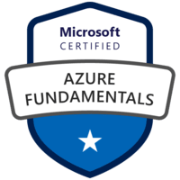
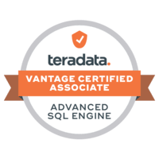
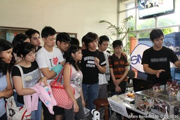

Certifications
-

Microsoft Certified:Azure Credentials
Earning this certification helped me understand the concepts of cloud technologies which became beneficial for me when tackling projects that have applications deployed on Azure.
(Click the badge for more information.)
-

Vantage Certified Associate
Earning this cerification helped me understand relational database concepts, the major components, core features and functionality, security and privacy, and Teradata’s data distribution and data access methods including a basic understanding of Teradata Tools and Utilities. This is vital in the work that I've done in various projects that heavily involved BackEnd systems and datawarehouses.
(Click the badge for more information.)
-
Consulting Skills - Essentials Level
Earning this certification helped me develop my skills in consulting particularly in dealing with client queries, providing the best solutions, and giving the best advice to clients.
(Click the badge for more information.)
-

Vantage Training - Essentials Level
Earning this certification helped me understand the company's flagship Vantage software and essential differentiators in the on-premesis, cloud, and hybrid analytic platform markets.
(Click the badge for more information.)
-

Teradata - Intro to Vantage
Earning this certification helped me understand Teradata Vantage's business value, how it addresses clients' needs, analytics success story and at a high level, its architecture, and query execution flow.
(Click the badge for more information.)
Tertiary Education
-
De La Salle University
Bachelor of Science in Manufacturing Engineering and Management
with specialization in Mechatronics and RoboticsThe BS Manufacturing Engineering and Management program aims to equip the individual with knowledge, skills, disciplines, and best practices in the fields of Manufacturing Engineering, Management, Robotics Engineering, Mechatronics, and Software engineering.
-

Our thesis group won the Gold Thesis Award for Electromyographic Robotic Arm Controller.This thesis focused on Controlling Robotic arms (any robot is also possible) using electrical signals coming from the muscles. It was also used as groundwork for prosthetic engineering in our university.